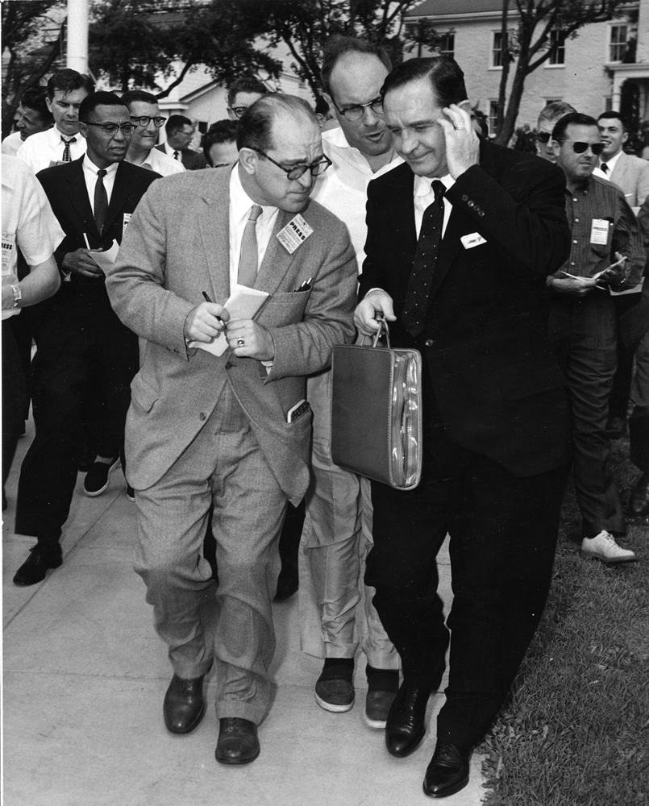

故事
一首曲子的歌詞，被唱片公司整段拿掉。1957 年，阿肯色州州長 Orval Faubus，派國民兵擋住九個黑人學生上學。貝斯手 Charles Mingus 很生氣，寫了一首曲子罵他。
曲名叫 Fables of Faubus，歌詞直接點名嘲笑這位州長。1959 年錄音時，唱片公司不准唱歌詞。所以專輯 Mingus Ah Um 裡的版本，只有樂器。

1960 年，他換到另一家小唱片公司，再錄一次。這次他和鼓手一問一答，把歌詞全部唱了出來。曲名也改成 Original Faubus Fables。下次聽到沒有歌詞的版本，想想那些被拿掉的話。
故事後面
一九五七年，阿肯色州州長 Orval Faubus 派國民兵擋住九個黑人學生進入小岩城中央高中，引發全國關注。
Charles Mingus 寫了 Fables of Faubus 嘲諷他，但一九五九年錄音時唱片公司不准唱歌詞，所以 Mingus Ah Um 裡只有樂器。
隔年他換一家小唱片公司重錄，和鼓手一問一答把歌詞全唱出來，曲名改成 Original Faubus Fables。
這樣聽
聽管樂故意吹得歪歪扭扭，像在模仿、在嘲笑。
逐句英文
A song's lyrics were cut entirely by the record label.
In 1957 Arkansas governor Orval Faubus sent the National Guard to block nine Black students from school.
Bassist Charles Mingus was furious and wrote a piece mocking him.
It was called Fables of Faubus, and the lyrics ridiculed the governor by name.
When it was recorded in 1959, the label would not allow the lyrics.
So the version on the album Mingus Ah Um is instrumental.
In 1960 he recorded it again for a small independent label.
This time he and his drummer traded the lyrics back and forth in full.
The title became Original Faubus Fables.
Next time you hear the instrumental, think of the words that were cut.
查證筆記與出處
一九六零版是 Candid 唱片《Charles Mingus Presents Charles Mingus》，鼓手是 Dannie Richmond，稿裡沒點名。不引用歌詞原文。和 EP63 小岩城事件前後呼應。
https://en.wikipedia.org/wiki/Fables_of_Faubus
https://en.wikipedia.org/wiki/Little_Rock_Nine
https://en.wikipedia.org/wiki/Mingus_Ah_Um
一分鐘影片版在 Instagram @jazz101tw。